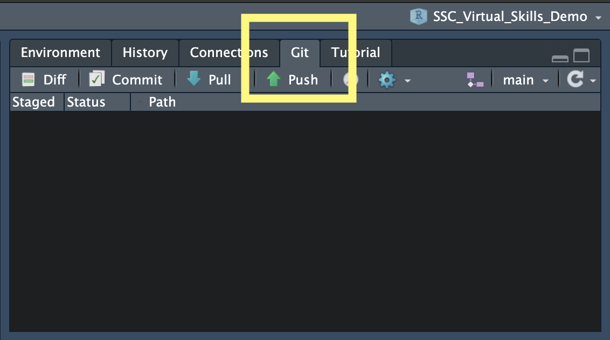
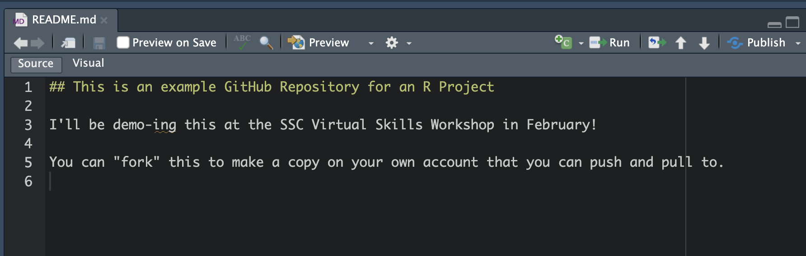
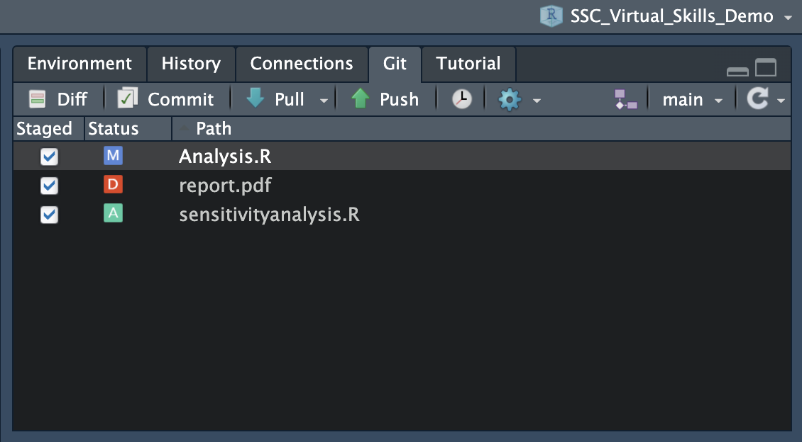
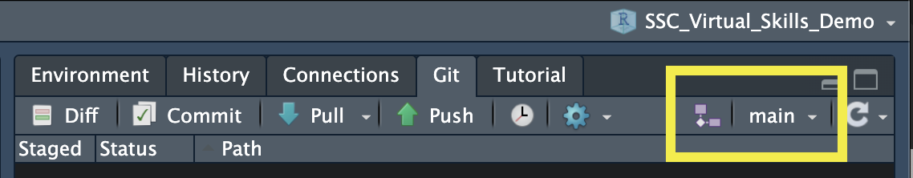
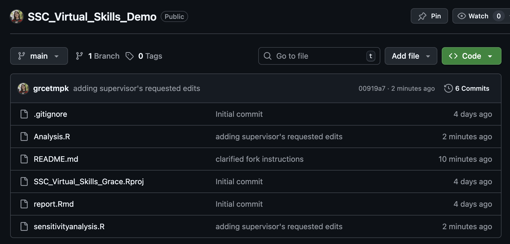
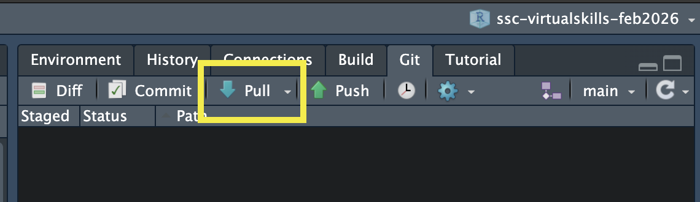

Written Notes
What is Git and GitHub?
Git is a free, open source version control system designed to track changes. It essentially creates “snapshots” of your work as your progress through a project
GitHub is a cloud-based platform for storing, managing, and collaborating. It uses Git (hence the name)!
Part 1: Set Up
Step 1.1: Sign up for a GitHub account
- I’d recommend using your personal email, not a student email.
Step 1.2 Install Git
Windows:
Open Command Prompt and type
where git. If you get an error, continue:Install Git for Windows (https://gitforwindows.org/)
When asked about “Adjusting your PATH environment”, make sure to select “Git from the command line and also from 3rd-party software”. Otherwise, keep the defaults.
Mac OS:
On the Terminal (Mac) type
which git. If you get an error, continue:Install XCode Command Line Tools by opening Terminal and typing
xcode-select --install(more info here)In Terminal, enter
git config. Click install.
Step 1.3: Configure Git in R
Within the Terminal (Mac) or Shell (Windows) within RStudio (Tools > Terminal/Shell) do
git config --global user.name "your_github_username"git config --global user.email "your_email_you_used_for_github@example.com"
(If you are having issues, you could use the usethis package in R. See here.)
Step 1.4: Configure Your Personal Access Token (PAT)
Option 1: Go to to https://github.com/settings/tokens and click “Generate token”.
Choose Classic Token
Describe the token’s purpose in the Note field, e.g. “personal-macbook” or “Stat545Installation”
Select “repo”, “user”, and “workflow” for scopes
Set an expiry date (can regenerate tokens later)
Save this token somewhere so you can use it again later, such as a password manager

Option 2: From R, execute
usethis::create_github_token()in the Console (you may have to install the usethis package first by first runninginstall.packages("usethis")).Describe the token’s purpose in the Note field
Set an expiry date (can regenerate tokens later)
Save this token somewhere so you can use it again later, such as a password manager
Regardless of how you generated your PAT, you now need to:
Run
install.packages("gitcreds")in the ConsoleRun
gitcreds::gitcreds_set()and enter the PAT that you just made when prompted- Note: the password will not show up when pasted! Paste once and press enter.
Part 2: Connect GitHub to an Existing R Project
There are two ways that we can connect GitHub and R Projects. The first way we will show is the “R First” approach (i.e., starting with an R Project and creating a repository for it).
In Part 5, we will do the opposite and start with a GitHub repository and create a local version of it.
Step 2.1: Initialize Git
Load in the
usethispackage by callinglibrary(usethis)in the Console.Then, run
use_git().When asked to commit changes, select the option that means yes. Restart RStudio if needed.
You should now see a “Git” pane by your Environment/History/Connections.

Step 2.2: Create a GitHub Repository for an Existing Project
Run
library(usethis)in the ConsoleThen, in the Console run
use_github().A new repository on your GitHub account with the same name as your R Project should be created! Head to your GitHub account to check it out.
Part 3: Sync Changes from your Computer
To use Git, we should first understand the primary states that files can be in. These are:
Modified: you’ve changed something in the files, but Git hasn’t accounted for them yet.
Staged: Git has tracked the changes you’ve made, but they haven’t been accounted for in the latest snapshot of your work.
Committed: the changes you’ve made have been stored and updated as the latest snapshot of your project.
After changes are committed locally (on your computer), we can push them to a GitHub repository. This sends the changes and updates the most recent version of your project on GitHub.
Step 3.1: Make some local changes
Edit and save the changes you make to any file in your repository
Do you have a README file yet? If not, create a new Markdown (not RMarkdown) document named README.md. Use markdown syntax to create a header that contains your repository name and a brief description in plain text.
The README file will show up on the home page of your repository on GitHub!

Step 3.2: Stage Files
Option 1 (Using the Git Pane)
Select the files you want to stage by selecting them.
You will see symbols beside them - “A” stands for “Added” and “M” stands for “modified”. If you were to delete a file, you would see a red “D”.

Option 2 (Using the Terminal)
Run
git add .. This will stage all of your modified filesYou can also just name the files you want to commit instead of using
.
Step 3.3: Commit Changes (save a snapshot of your work!)
Option 1 (Using the Git Pane)
Click the Commit button.
Add a message explaining the changes
Click Commit. Close this pop-up.

Option 2 (Using the Terminal)
- Run
git commit -m "[desciption]"where [description] is a brief summary of the changes.
- Run
Step 3.4: Push the Changes to GitHub
Option 1 (Using the Git Pane)
Click the Push button

Option 2 (Using the Terminal)
- Run
git push origin <branchname>in the Terminal<branchname> is typically
mainormaster. You find the branch name in the Git pane or by usinggit statusIn my example, I would run
git push origin main
- Run
After pushing, you should be able to see the updates on your GitHub repository!
Notice the message beside your changed files - those are your commit messages!

Part 4: Pull Changes from GitHub
Perhaps you made a change directly on GitHub, or a collaborator pushed changes to Github
These changes are not automatically shown on your local version of your R Project
You need to pull these changes from GitHub to your local version

Step 4.1: Pull
Option 1 (Using the Git Pane)
Click the Push button


Option 2 (Using the Terminal)
- Run
git pullin the Terminal
- Run
Part 5: Cloning
“Cloning” refers to the process of taking an existing repository on GitHub and making a copy on your local computer.
Some tutorials will refer to this as a “GitHub First” approach to syncing your changes to GitHub.
Step 5.1: Copy link to repository
- Navigate to the repository you want to clone on GitHub.
- Clicking the green “Code” button to copy the address of the repository.

Step 5.2: Clone the Repository
In RStudio, go to “File > New Project”
Click on “Version Control: Checkout a project from a version control repository”
Click on “Git: Clone a project from a repository”
Fill in the details:
URL: use the HTTPS address (from Step 5.1)
Create as a subdirectory of: Browse to where you would like to save this repository on your machine (creates a new folder in the location you select)

Now you have a local version of this project!
If you have permission to, you can push and pull the same as in Part 4!

Side note:
You can clone any public project, however you need to be added as a collaborator to push those changes to GitHub.
If you’d like to play around with existing repositories, you could “Fork” it. A fork is a copy of a repository. Forking a repository allows you to freely experiment with changes without affecting the original project. More info here: https://docs.github.com/en/pull-requests/collaborating-with-pull-requests/working-with-forks/fork-a-repo.
Wrap Up
GitHub is a powerful tool that I wish I mastered earlier in my career!
I even have these exact slides on a GitHub repository, built using Quarto (another fun topic for another session 🤭)
More Topics: